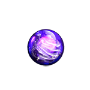
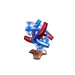
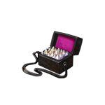
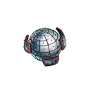
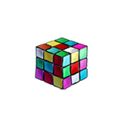

Получено: файл; исходный URL. Иллюстрация «Гипер-коллекция» из каталога ViveR_9, сопоставлена по точному названию; возможны отличия версий. Оригинальный файл без перекодирования; авторство отдельно не установлено. Страница: источник.

Гипер-коллекция
ВКонтакте; дата источника не указана- Тип
- Коллекции
- Версия и дата
- ВКонтакте; дата источника не указана
Элементы коллекции















Данные по источнику · ВКонтакте · дата источника не указана
Предварительно: один источник; требует сверки. Требуется сверка.
- Награда
- 10 кварца и 400 опыта
- Где копать
- Слоник, каменное сердце, пристань на остров Майя, камни и деревья островов Любви и Майя, белый и чёрный мрамор
- Состав (источник Zombie-island)
- Лиловый шар; Магнит; Миелофон; Сфера; Кубик Рубика.
- Награда (источник Zombie-island)
- 10 Кварц; 400 Опыт.
- Где копать Гипер-коллекцию в Зомби Ферме лопатами
- Слоник; Слоник за монеты; Пристань на остров Майя; Плюшевое сердце; Бетонное сердце; Кости; Валун маленький; Зеленый мрамор 1; Белый мрамор 3; Черный мрамор 3; Дуб розовый; Пальма 3; Дуб желтый 1; Дуб желтый 2; Секвойя 1; Секвойя 2; недостроенный Мост.
- Гипер-коллекция носится Кладоискателями, Рыбаками, Звездочетами
- Кладоискател; Кладоискател с мозгами; Звездочет; Звездочет за зомбаксы; Рыбак; Рыбак с мозгами.
- Гипер-коллекцию можно выиграть в рулетках
- Лимонный автомат; Вишневый автомат.
- Гипер-коллекцию можно найти в ценностях и сокровищах
- Сундук Чудовища 3; Сундук Вишни; Сундук Лимона; Сюрприз бригады; Коллекционер 2; Лампа света; Цирковой шатер; Хэллоуинский маяк; Новогодняя елка за дубл; Новогодняя елка за зб; Алтарь; Тыква Джэка; Биг-бен; Изумрудная башня.
- Участвует в создании Японской коллекции в Планетарии
- Японская коллекция.
- Гипер-коллекцию можно изготовить в Планетарии
- Лиловый шар; Клешня; Бозон Хиггса; Планетарий; Магнит; Элемент 1; Миелофон; Шлемофон; Сфера; Слизь; Кубик Рубика; Элемент 2.
- Гипер коллекцию можно привезти с пиратских островов
- Пиратский сундук.
- Страница сайта Гипер-коллекция
- Описание:.
Данные по источнику · браузерная версия; платформа не указана · дата редакции не установлена
Предварительно: Содержимое списка: изображения и колонки могут терять смысл при извлечении текста; отдельная страница и дата не проверены. Подписи alt иногда ошибочны.. Требуется сверка.
- Текст карточки из каталога
- 10 Кварца и 400 опыта Лиловый шар Магнит Миелофон Сфера Кубик Рубика Где копа ть: Стол, Кости, Бетонное сердце, Дуб розовый, Дуб желтый, Плюшевое сердце, Чёрный мрамор, Слоник за монеты, Каменное сердце, пристань "На остров Майя", камни островов Любви и Майя, белый мрамор, деревья острова Любви, деревья острова Майя
Данные по источнику · Мой Мир (Mail.ru); историческая таблица · дата редакции не установлена
Предварительно: Источник сам использует знаки вопроса; не следует считать такие места подтверждёнными. Возможны изменения патча и платформы; независимость от других справочников не доказана.. Требуется сверка.
Данные по источнику · браузерная версия; на сайте указана игра ВКонтакте · дата редакции не установлена
Предварительно: Исторический текст; сильно совпадает со справкой Zommbie.at.ua, независимость не доказана. Отрицания и доступность могут измениться с патчем.. Требуется сверка.
- Где искать по странице «Зомбастики»
- Каменное сердце, розовые деревья на острове любви, пальмы, секвойя.
Данные по источнику · историческая браузерная версия, платформа не указана · 10.01.2014 — дата в каталоге; дата редакции материала неизвестна
Предварительно: Фанатский список без вероятностей и уточнения площадки; независимость от других источников не установлена.. Требуется сверка.
- Где искать по списку сайта
- Каменное сердце, розовые деревья на острове любви, пальмы, секвойя
- Оговорка
- Список может относиться к разным условиям, инструментам и периодам игры; не доказывает гарантированное выпадение. Заявления «только» и «невозможно» относятся лишь к времени и версии источника.
Данные по источнику · историческая браузерная игра; площадка не уточнена · 25.02.2013 — дата каталога; редакция неизвестна
Предварительно: Проверен текст в каталоге сайта; вероятность выпадения не указана. Исторические версии и даты могут различаться; списки и награды требуют сверки, независимость сайта от других справочников не установлена.. Требуется сверка.
- Награда в источнике
- 10 кварца и 400 опыта
- Места в источнике
- Стол, кости, бетонное и плюшевое сердца, дуб, чёрный мрамор, слоник за монеты, каменное сердце, пристань на остров Майя, камни островов Любви и Майя, белый мрамор, секвойя, пальмы.
Связанные сущности
нет проверенных связей — требуется сверка.
Источники
- прочитано; проверка 2026-11-21
- прочитано: Zombie-island.moy.su; проверка 2026-11-21
- ZOMBIA: прочитана карточка в списке
- Ссылка на отдельную страницу; отдельно не проверена
- Zombiemail: строка таблицы коллекций; Мой Мир
- Зомбастики: прочитана соответствующая строка; возможная копия другого справочника
- ViveR_9: изображение в каталоге коллекций; совпадение названия
- zommbie.at.ua: где искать коллекции
- zombi-ferma.ucoz.net: каталог коллекций